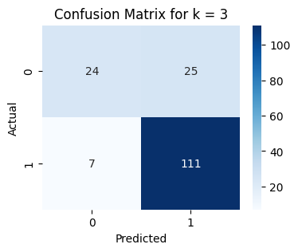
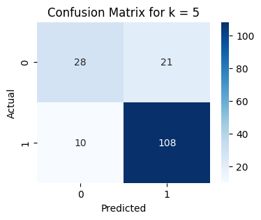
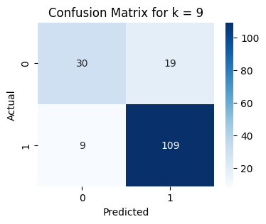
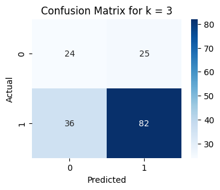
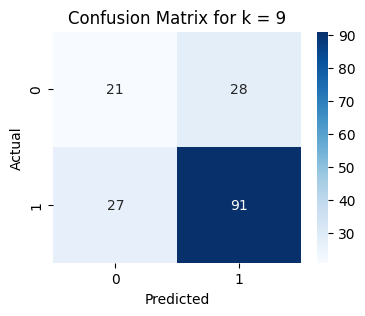

[nltk_data] Downloading package punkt to /root/nltk_data...
[nltk_data] Package punkt is already up-to-date!
[nltk_data] Downloading package stopwords to /root/nltk_data...
[nltk_data] Package stopwords is already up-to-date!
True
4 Data
from google.colab import drivedrive.mount('/content/drive')csv_path ='/content/drive/My Drive/Study Of Informatika/Pencarian dan Penambangan Web/Tugas 1/data/pta-teknik-informatika-with-label.csv'df = pd.read_csv(csv_path)df
Drive already mounted at /content/drive; to attempt to forcibly remount, call drive.mount("/content/drive", force_remount=True).
Text preprocessing merupakan tahapan dalam Natural Language Processing (NLP) yang bertujuan untuk membersihkan dan menyiapkan teks mentah menjadi data siap digunakan pada proses yang lebih lanjut. Text preprocessing ini menjadi sangat krusial karena membantu mengatasi berbagai masalah seperti data berantakan, tanda baca yang berlebihan, serta variasi dalam bentuk kata
0 sistem informasi akademik (siakad) merupaka...
1 berjalannya koneksi jaringan komputer dengan l...
2 web server adalah sebuah perangkat lunak serve...
3 penjadwalan kuliah di perguruan tinggi me...
4 seiring perkembangan teknologi yang ada diduni...
...
826 investasi saham selama ini memiliki resiko ker...
827 information retrieval (ir) merupakan pengambil...
828 klasifikasi citra merupakan proses pengelompok...
829 identifikasi atribut pejalan kaki merupakan sa...
830 topik deteksi objek telah menarik perhatian ya...
Name: abstrak, Length: 831, dtype: object
5.1 Tokenisasi
Tokenizing adalah proses yang mengubah teks berkelanjutan menjadi unit-unit yang lebih kecil dan disebut dengan token. Token ini biasanya adalah kata, frasa, atau tanda baca yang memisahkan kata-kata dalam teks, dengan ini akan memudahkan untuk melakukan analisis terhadap teks dan akan membantu menyaring kata-kata yang tidak diinginkan pada pemrosesan teks lebih lanjut
Proses punctuation ini digunakan untuk mengahapus karakter yang tidak digunakan pada teks, seperti tanda baca dan angka. Beberapa karakter ini harus dihilangkan karena karakter tersebut tidak akan mempengaruhi hasil pada saat melakukan klasifikasi topic
def process_punctuation(tokens): cleaned_tokens = [re.sub(r'[.,()&=%:-]', '', token) for token in tokens] cleaned_tokens = [re.sub(r'\d+', '', token) for token in cleaned_tokens]return cleaned_tokenspunctuation_abstrak = tokenize_abstrak.apply(process_punctuation)# data = pd.DataFrame(df, columns=['punctuation_abstrak'])# datapunctuation_abstrak
Remove Stopword adalah tahap yang melibatkan penghapusan kata-kata umum yang dianggap tidak memberikan nilai signifikan dalam analisis teks. Kata-kata semacam ini disebut stop words karena mereka sering muncul dalam teks bahasa alami tanpa memberikan informasi penting tentang isi atau makna teks. Contoh kata-kata umum ini termasuk “dan”, “atau”, “di”, “dari”, “yang”,” itu”, dan sebagainya. Penghapusan stop words bertujuan untuk mengurangi ukuran teks, mempercepat pemrosesan, dan meningkatkan relevansi informasi yang diambil dari teks, sehingga hanya kata kunci yang membentuk topik yang akan diekstraksi.
def process_stopword_token(tokens): stop_words =set(stopwords.words("indonesian")) custom_stop_words = ['masingmasing','tiaptiap','satusatunya', 'intinya', 'seiring'] stop_words.update(custom_stop_words) filtered_tokens = [token for token in tokens if token.lower() notin stop_words]return" ".join(filtered_tokens)stopword_abstrak = punctuation_abstrak.apply(process_stopword_token)stopword_abstrak
0 sistem informasi akademik siakad sistem inform...
1 berjalannya koneksi jaringan komputer lancar g...
2 web server perangkat lunak server berfungsi me...
3 penjadwalan kuliah perguruan kompleks permasal...
4 perkembangan teknologi didunia muncul teknolog...
...
826 investasi saham memiliki resiko kerugian perge...
827 information retrieval ir pengambilan informasi...
828 klasifikasi citra proses pengelompokan piksel ...
829 identifikasi atribut pejalan kaki salah peneli...
830 topik deteksi objek menarik perhatian perkemba...
Name: abstrak, Length: 831, dtype: object
5.4 Steeming
Stemming merupakan proses untuk mengurangi kata-kata ke bentuk dasarnya atau akar kata. Tujuannya adalah untuk mengidentifikasi kata-kata yang memiliki akar yang sama, meskipun mereka mungkin memiliki akhiran atau imbuhan yang berbeda
0 sistem informasi akademik siakad sistem inform...
1 jalan koneksi jaring komputer lancar ganggu ha...
2 web server perangkat lunak server fungsi terim...
3 jadwal kuliah guru kompleks masalah variabel t...
4 kembang teknologi dunia muncul teknologi augme...
...
826 investasi saham milik resiko rugi gera harga s...
827 information retrieval ir ambil informasi simpa...
828 klasifikasi citra proses kelompok piksel citra...
829 identifikasi atribut pejal kaki salah teliti k...
830 topik deteksi objek tarik perhati kembang tekn...
Name: abstrak, Length: 831, dtype: object
df['stopword-abstrak'] = stopword_abstrakdf['steeming-abstrak'] = steeming_abstrakdf.to_csv('/content/drive/My Drive/Study Of Informatika/Pencarian dan Penambangan Web/Tugas 1/data/processing-data/preprocessing.csv', index=False)
6 Feature Extraction
Feature extraction ini digunakan untuk mengubah keseluruhan teks dalam dokumen menjadi angka numerik dengan menggunakan algoritma TF-IDF dan LDA Topic
csv_preprocessing ='/content/drive/My Drive/Study Of Informatika/Pencarian dan Penambangan Web/Tugas 1/data/processing-data/preprocessing.csv'data = pd.read_csv(csv_preprocessing)data
TF-IDF adalah teknik yang digunakan untuk mengukur pentingnya kata-kata dalam suatu dokumen dalam konteks korpus dokumen yang lebih besar. Ini dapat digunakan untuk mengidentifikasi kata-kata kunci atau fitur penting dalam analisis teks dan Natural Language Processing
Untuk melakukan clustering akan menggunakan hasil fitur yang didapatkan pada ekstraksi kalimat di tahapan sebelumnya dengan menggunakan TF-IDF dan LDA Topic. Kedua algoritma tersebut memiliki cara kerja yang berbeda maka dengan melakukukan perbandingan nilai skor yang dihasilkan pada saat clustering dokumen maka nanti dapat diambil kesimpulan dari hasil ektraksi fitur yang terbaik ketika menggunakan kedua algoritma tersebut.
/usr/local/lib/python3.10/dist-packages/sklearn/cluster/_kmeans.py:870: FutureWarning: The default value of `n_init` will change from 10 to 'auto' in 1.4. Set the value of `n_init` explicitly to suppress the warning
warnings.warn(
/usr/local/lib/python3.10/dist-packages/sklearn/cluster/_kmeans.py:870: FutureWarning: The default value of `n_init` will change from 10 to 'auto' in 1.4. Set the value of `n_init` explicitly to suppress the warning
warnings.warn(
Sama halnya pada clustering, proses klasifikasi kali ini akan membandingkan antara kedua algoritma ektraksi fitur yaitu TF-IDF dan LDA Topic sehingga nanti akan dihasilkan perbandingan antara akurasi terbaik ketika menggunakan LDA atau TF-IDF
8.1 TF-IDF
X = tfidf_dfy = data['label-topic']y = y.replace({'komputasi': 1, 'rpl': 0})def train_knn_classifier(k):# train model knn X_train, X_test, y_train, y_test = train_test_split(X, y, test_size=0.2, random_state=42) knn_classifier = KNeighborsClassifier(n_neighbors=k) knn_classifier.fit(X_train, y_train) y_pred = knn_classifier.predict(X_test)# confusion matrix cm = confusion_matrix(y_test, y_pred) disp = ConfusionMatrixDisplay(confusion_matrix=cm) plt.figure(figsize=(4, 3)) sns.heatmap(cm, annot=True, fmt='d', cmap='Blues') plt.xlabel('Predicted') plt.ylabel('Actual') plt.title(f'Confusion Matrix for k = {k}') plt.show() accuracy = accuracy_score(y_test, y_pred) precision = precision_score(y_test, y_pred) recall = recall_score(y_test, y_pred) f1 = f1_score(y_test, y_pred)print('\nHasil Evaluasi Nilai K adalah',k,'\nAccuracy =', accuracy,'\nPrecision =', precision,'\nRecall =', recall,'\nF1 Score =', f1 )
train_knn_classifier(3)

Hasil Evaluasi Nilai K adalah 3
Accuracy = 0.8083832335329342
Precision = 0.8161764705882353
Recall = 0.940677966101695
F1 Score = 0.8740157480314961
train_knn_classifier(5)

Hasil Evaluasi Nilai K adalah 5
Accuracy = 0.8143712574850299
Precision = 0.8372093023255814
Recall = 0.9152542372881356
F1 Score = 0.8744939271255062
train_knn_classifier(7)
Hasil Evaluasi Nilai K adalah 7
Accuracy = 0.8083832335329342
Precision = 0.8359375
Recall = 0.9067796610169492
F1 Score = 0.8699186991869919
train_knn_classifier(9)

Hasil Evaluasi Nilai K adalah 9
Accuracy = 0.8323353293413174
Precision = 0.8515625
Recall = 0.923728813559322
F1 Score = 0.8861788617886179
8.2 LDA Topic
X = topic_proportionsy = data['label-topic']y = y.replace({'komputasi': 1, 'rpl': 0})def train_knn_lda_classifier(k):# train model knn X_train, X_test, y_train, y_test = train_test_split(X, y, test_size=0.2, random_state=42) knn_classifier = KNeighborsClassifier(n_neighbors=k) knn_classifier.fit(X_train, y_train) y_pred = knn_classifier.predict(X_test)# confusion matrix cm = confusion_matrix(y_test, y_pred) disp = ConfusionMatrixDisplay(confusion_matrix=cm) plt.figure(figsize=(4, 3)) sns.heatmap(cm, annot=True, fmt='d', cmap='Blues') plt.xlabel('Predicted') plt.ylabel('Actual') plt.title(f'Confusion Matrix for k = {k}') plt.show() accuracy = accuracy_score(y_test, y_pred) precision = precision_score(y_test, y_pred) recall = recall_score(y_test, y_pred) f1 = f1_score(y_test, y_pred)print('\nHasil Evaluasi Nilai K adalah',k,'\nAccuracy =', accuracy,'\nPrecision =', precision,'\nRecall =', recall,'\nF1 Score =', f1 )
train_knn_lda_classifier(3)

Hasil Evaluasi Nilai K adalah 3
Accuracy = 0.6347305389221557
Precision = 0.7663551401869159
Recall = 0.6949152542372882
F1 Score = 0.7288888888888889
train_knn_lda_classifier(5)
Hasil Evaluasi Nilai K adalah 5
Accuracy = 0.6586826347305389
Precision = 0.7606837606837606
Recall = 0.7542372881355932
F1 Score = 0.7574468085106383
train_knn_lda_classifier(7)
Hasil Evaluasi Nilai K adalah 7
Accuracy = 0.6407185628742516
Precision = 0.7457627118644068
Recall = 0.7457627118644068
F1 Score = 0.7457627118644068
train_knn_lda_classifier(9)

Hasil Evaluasi Nilai K adalah 9
Accuracy = 0.6706586826347305
Precision = 0.7647058823529411
Recall = 0.7711864406779662
F1 Score = 0.7679324894514766